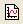
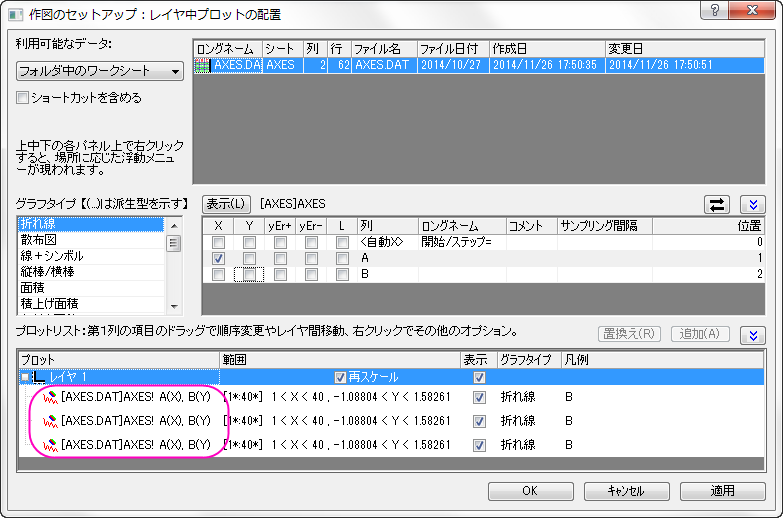
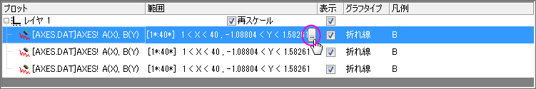
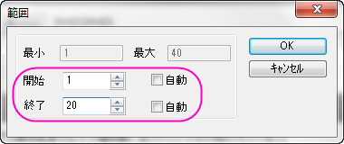
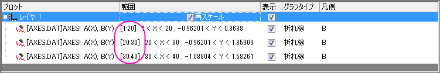
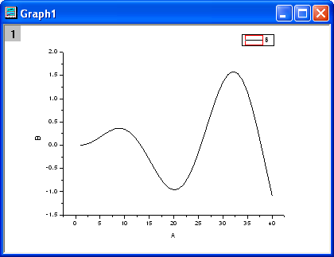
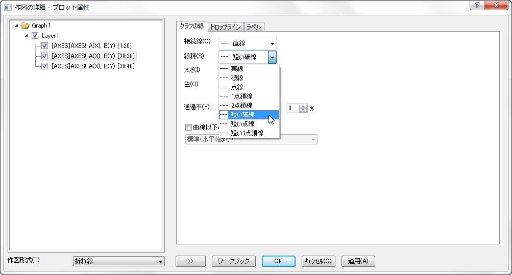
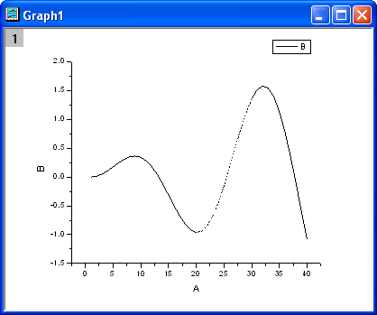

異なるプロットスタイルでプロットの一部を区分けする
Partial-Different-Style-Plot
概要
Originで、実線の中に破線の区画を表示するといった、異なるプロットスタイルでプロットのセグメントを区分けすることができます。
必要なOriginのバージョン: Origin 8.0 SR6以降
学習する項目
- 「作図の詳細」ダイアログを使って、グラフを作成する
- プロットの特別な部分を区分けする
ステップ
- 新しいワークブックを用意します。ヘルプ: フォルダを開く: サンプルフォルダを選択して、サンプルフォルダを開きます。このフォルダ内のGraphingサブフォルダにあるAXES.DAT ファイルを探します。空のワークシートにファイルをドラッグアンドドロップしてインポートします。
- 標準ツールバーのボタンをクリックして、新しいグラフウィンドウを作成し、グラフ操作：作図のセットアップを選び、作図のセットアップダイアログボックスを開きます。
- 「作図のセットアップ」ダイアログボックスの3つのすべてのパネルを開いて表示します。一番上のパネルから、 AXESワークシートを選択します。そして、中央のパネルで、A をXとして、B をYとして選択します。「追加」ボタンをクリックして、このデータプロットを一番下のパネルに追加します。このステップを3回繰り返します。3つのデータプロットは、一番下に表示されます。

 | 作図のセットアップダイアログで3つのパネルを全ての表示するために ボタンをクリックしてグラフタイプパネルを開き、再度をクリックして利用可能なデータパネルを開きます。 ボタンをクリックしてグラフタイプパネルを開き、再度をクリックして利用可能なデータパネルを開きます。
詳細な情報は作図のセットアップで作図を参照してください。
|
- 一番下のパネルで、最初のデータプロットの範囲列をクリックします。ボタンがアクティブになります。そして、このボタンをクリックして、範囲ダイアログボックスを開きます。

- 自動チェックボックスを外し(選択されていれば)、開始を1、終了を20にセットします。OK をクリックしてダイアログを閉じます。

- 同様に、他の2つのデータプロットの範囲も、それぞれ、"20から30"と"30 から40"にセットします。

- OK ボタンをクリックして、「作図のセットアップ」ダイアログを閉じます。このようなグラフになります。

- グラフウィンドウの曲線をダブルクリックして、「作図の詳細」ダイアログを開きます。左側のパネルから2番目のデータプロットを選択します。右側のパネルで、線種を点線に変更し、OKボタンをクリックします。

- そして、区分けされた範囲を持つグラフが完成します。
